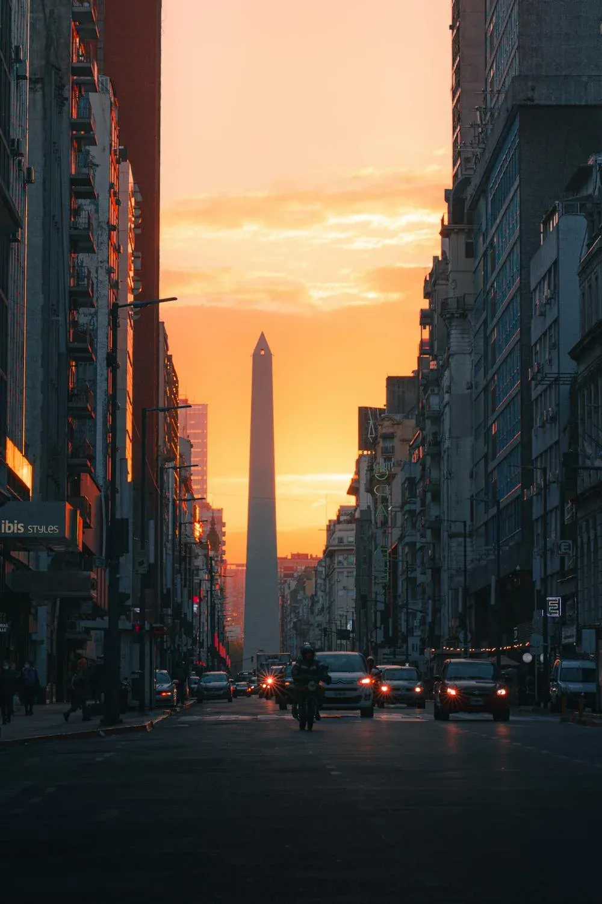

Explore different views of Buenos Aires' most iconic monument through time and events.

Sunset view from Avenida 9 de JulioHistorical capture from the 1930sCelebrations at the ObeliskNight lights around the monumentAerial shot showcasing the city's layoutPolitical demonstration at the ObeliskHistorical photo of the construction of the Obelisk in Buenos Aires